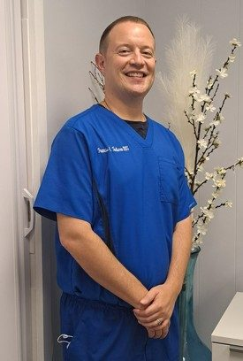
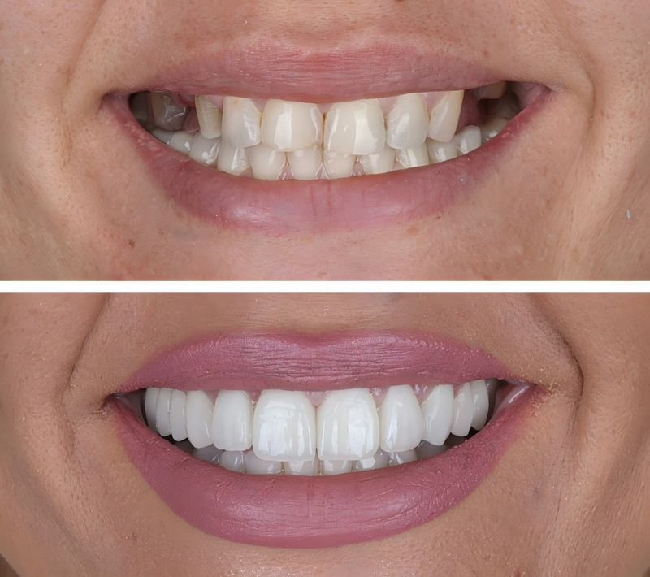
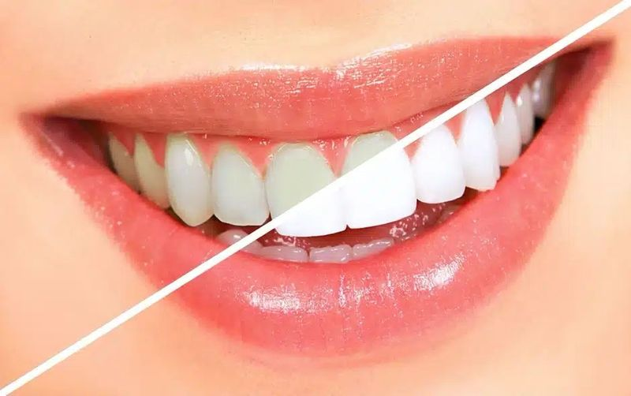
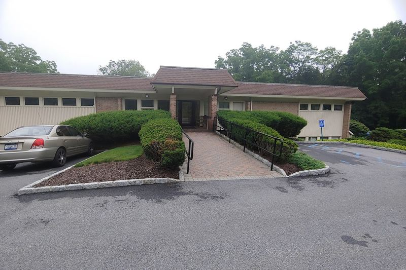

Patient story
Angel
Hudson Valley Dental Medicine patient
Hear from Angel, one of the families who trust Dr. Turturro and the Hudson Valley Dental Medicine team with their smiles.
Cortlandt Manor, NY · Now Welcoming New Patients
New patients receive a complimentary consultation and personalized treatment plan with Dr. Francis Turturro.
Join Hudson Valley Dental Medicine and experience personalized care, with a custom plan for a healthier, brighter smile.
5.0 · 200+ Google ReviewsNew patients only. Your complimentary first visit is a consultation and personalized treatment plan.
Why choose us
We take the time to understand each patient's goals, concerns, and unique oral health needs before recommending treatment. Dr. Turturro and his team deliver exceptional care with a personal touch, combining modern dentistry with a warm, community-focused experience.
Comprehensive care for the whole family.
Efficient care and quick response times.
Modern technology and advanced treatment options.
Comfortable, welcoming environment.
Small-practice attention with big-practice capability.
Focus on long-term oral health.
iTero 3D digital simulation
Preview your new smile before treatment begins with iTero 3D digital simulation, then review a personalized plan with Dr. Turturro.
Book Your Free ConsultationWhat we offer
Personalized, patient-focused dentistry designed around your unique needs, led by Dr. Turturro.
A cooperative program between patient and team to prevent dental disease before it starts.
A fixed, natural-feeling solution to replace missing teeth, no removable dentures.
Achieve the smile you deserve, from whitening to full smile makeovers.
Custom-made restorations to repair or replace damaged and missing teeth.
Comprehensive diagnosis, prevention, and treatment for Cortlandt families.
Not sure what you need? Start with your complimentary consultation and Dr. Turturro will walk you through a personalized plan.

Meet your doctor
A Westchester County native, Dr. Turturro earned his Doctor of Dental Surgery from Columbia University in 2007 and completed a General Practice Residency at Westchester Medical Center in 2009. He's been practicing in the Bronxville community for more than 12 years.
Outside the practice, he's a Yorktown Heights local raising his own family here, and brings that same neighborly care to every patient who walks through the door.
Patient stories
Patient story
Hudson Valley Dental Medicine patient
Hear from Angel, one of the families who trust Dr. Turturro and the Hudson Valley Dental Medicine team with their smiles.
“Dr. Turturro and his whole staff are the best! They couldn't be any friendlier. They try their best to make my time there not only as painless as possible, but also enjoyable. I have had a few different procedures, and all of them have gone without a hitch. Dr. Turturro seems to take pains to make sure the procedures go well, and tells me what he's doing as he goes. Thank you!”
“I highly recommend this dental office. I'm always treated with utmost care. Dr. Turturro is a true dentist, and Fabiana, the hygienist, is a delight. Sarah is incredibly knowledgeable and always makes me feel at ease during my treatments. I always look forward to my appointments here.”
“Great dental care. Hygienist does a very thorough cleaning. Dr. T does great work when needed and doesn't push unnecessary services”
“We had such a great experience with Dr Turturro and our hygienist Fabiana. They were both professional, gentle, and made me and my 2 girl's feel completely at ease. The entire staff was incredibly friendly and welcoming from start to finish. I wish I remembered the name of the woman who took our X-rays-she was so kind and sweet and really made the experience stress-free. Changing our provider and bringing our whole family here was absolutely the right decision. We couldn't be happier!”
“Always a great visit to Hudson Valley Dental Fabianna a great hygienist with great suggestions. Dr Tuturro is a great Dentist calm and relaxing demeanor and transparent Assistant Adriana is helpful and pleasant. And Sarah is great receptionist. makes going to dentist less painful. Highly recommended”
“The entire experience of Hudson Valley Dental Medicine is stellar. The front desk with Sarah is the first indication that you are dealing with real, caring people. Sarah is knowledgable and personable nd always accommodating. Fabiana is an excellent hygienist and also very friendly. Dr. Turturro is a quieting yet commanding presence. He knows what you need and completes his work in a comfortable manner. Adrianna, Dr. Turturro's dental assistant, is also a competent presence and very engaging in her pleasant demeanor. All in all Hudson Valley Dental Medicine has what you need, want in a dentist's office!”
Proven results


Results vary by patient and case complexity. Treatment lengths are typical but not guaranteed.
Questions
Yes. We work with many major PPO plans, and our team is happy to help you verify your benefits. Call (914) 350-2622 with your plan details and we'll check your coverage.
Same-week appointments are often available, and same-day emergency appointments may be available. Submit the form above or call (914) 350-2622 and our team will confirm your appointment by phone or text.
Cleanings & prevention, general dentistry, cosmetic dentistry, crowns & bridges, and dental implant restorations, all in our Cortlandt Manor office and led by Dr. Turturro.
Yes. We're welcoming new patients, and your first visit includes a complimentary consultation and a personalized treatment plan with Dr. Turturro.
1983 Crompond Rd #202, Cortlandt Manor, NY 10567. Get directions. We're open Monday, Tuesday and Thursday 8:30 AM – 5:30 PM, Friday 8:30 AM – 2:30 PM, and Saturday 8:30 AM – 1:00 PM.
Ready when you are
Hudson Valley Dental Medicine offers personalized, patient-focused dentistry designed around your unique needs. Led by Dr. Francis Turturro, our team combines advanced dental capabilities, efficient care, and a welcoming environment.
1983 Crompond Rd #202,
Cortlandt Manor, NY 10567
